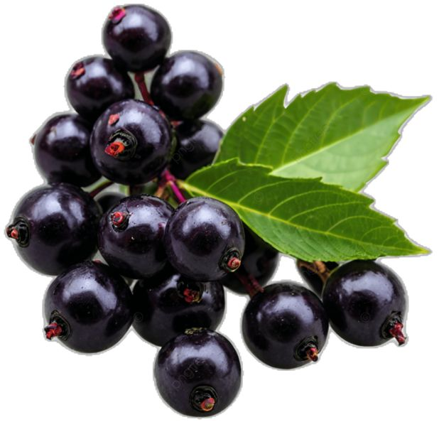

Elderberry

| Index |
|---|
| Short description |
| Nutritional value |
| Health benefits |
| Best time to eat |
| Who shoud avoid |
| Fun fact |
Short Description
Elderberry is a small, dark purple fruit that grows in clusters on elder trees. It is rarely eaten raw and is mainly used in syrups, juices, teas, and medicines. Elderberry is well known for its strong immune-boosting properties and has been used in traditional medicine for centuries.
Nutritional Value
| Nutrient | Amount |
|---|---|
| Calories | 73 kcal |
| Carbohydrates | 18 g |
| Dietary Fiber | 7 g |
| Vitamin C | 60% |
| Vitamin A | 17% |
| Antioxidants | Very High |
Health Benefits
- Boosts immunity strongly by fighting infections
- Reduces cold and flu symptoms
- Fights inflammation in the body
- Supports heart health
- Improves skin health due to antioxidants
Best Time to Eat
Elderberries should be consumed in the morning, preferably in processed or cooked form such as syrup or tea.Morning consumption helps the immune system stay active throughout the day..
Never eat elderberries raw because:
- They can be toxic
- May cause nausea or vomiting
Best practice: Morning + cooked elderberry products only.
Who Should Avoid
- Pregnant and breastfeeding women, unless advised by a doctor
- Children, without medical guidance
- People consuming raw elderberries, as they are unsafe
Fun Fact
- Elderberries were used as medicine in ancient civilizations
- The elder plant was considered sacred in folklore
- Raw elderberries are toxic, but cooking makes them safe